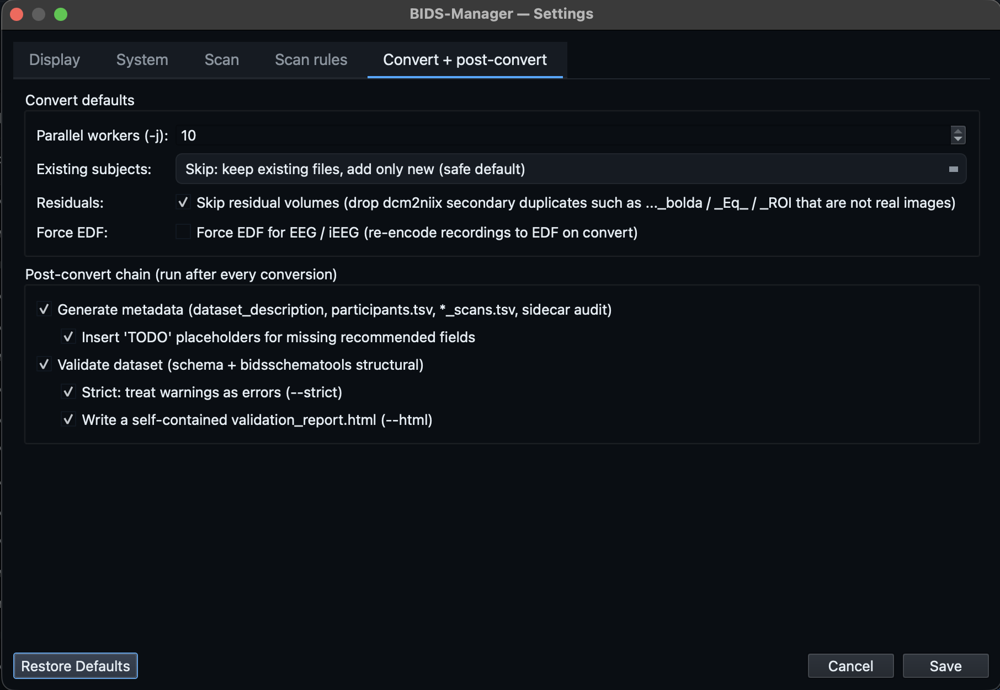

Primary walkthrough.
Small Siemens MRI dataset with T1w, T2w, BOLD, DWI, fmap, and physio. The cleanest end-to-end example, and the one the GUI walkthrough below uses.
One end-to-end walkthrough. You'll watch the GUI step through scanning, curating, converting, enriching and validating a real MRI dataset, then see the same four stages run from the command line. Step at your own pace, or download one of the four sample datasets and follow along on your own machine.
Other DICOM-to-BIDS tools require you to declare up front how each series should be classified. BIDS Manager scans the raw data first and shows you what is actually inside the folders. Every series, every entity guess, every confidence score. The interactive table you edit is the same one the converter consumes, so what you see is what gets written.
You begin by creating or opening a dataset project (the work is saved into it and is resumable). From there BIDS Manager runs in eight stages, alternating user-driven and engine-driven steps. Every step below mirrors what BIDS Manager does on disk, using the same engine the CLI exposes. The full interactive diagram lives on the intro page.
The walkthrough below uses the primary MRI dataset (Oldenburg neuroimaging unit). Pick any of the four to download and follow along. Each More info link opens a page with the dataset tree, real CLI numbers, and modality-specific quirks.
Small Siemens MRI dataset with T1w, T2w, BOLD, DWI, fmap, and physio. The cleanest end-to-end example, and the one the GUI walkthrough below uses.
Showcases the task-name override scene: filenames carry only an opaque run token (S001R01...). The user assigns the real protocol task names in the interactive table before any conversion runs.
Shows automatic session inference from date-named folders. Tasks parse cleanly (driving, rest, empty-room). Demonstrates the MEG conversion path through mne-bids.
The deep dive. T1w / T2w / T2starw / FLAIR anatomicals, BOLD plus SBRef, DWI with FA / colFA / trace / TENSOR derivatives, fmap pairs, Siemens CMRR physio.
Six steps using the primary MRI dataset (Oldenburg neuroimaging unit: 3 folders, 2 BIDS subjects). Use the dots or the prev / next buttons to step through. For the full dataset detail (tree, real CLI numbers, quirks) see the MRI 1 info page.
The example below uses the primary MRI dataset because
it exercises every datatype (anat, func, dwi, fmap,
physio) in a single small folder, but
the six steps below are identical for EEG and MEG
data. Only the per-row backend swaps:
dcm2niix for DICOM rows,
mne-bids for EDF / FIF / BDF
/ BrainVision / CTF, and
bidsphysio for Siemens CMRR
physio. The Scan -> Inspect -> Convert -> Editor flow
you see here is what you do on every supported modality.
For modality-specific quirks (session inference from
date-named folders, task name overrides in EDF, DWI
derivative detection, etc.), see the
EEG,
MEG, or
MRI advanced
info pages.
BIDS Manager is project-first. On the Welcome tab you create a new BIDS dataset or open an existing one; the BIDS output is then locked to that project. In the Converter you set just one path: Raw input, the folder that holds your recordings (one subfolder per scanning session). Everything you do is saved into the project, so you can close the app and resume later.
The Scan button stays disabled until a project is open and the raw input path is valid. Run conversion stays disabled until a scan finishes.
The Scan… button kicks off an inventory
walker. It reads metadata from inside every file (DICOM
tags, EDF / FIF headers), clusters folders into BIDS
subjects by PatientID, groups
files into series by
SeriesInstanceUID, and stamps
each series with a bids_guess_*
entity tuple plus a confidence score. The status chips
(valid / warnings / error / skipped) tick to their final
counts as it runs.
Settings → Scan rules lets you add
classifier hints and series exclusions (by sequence
name or path) when the defaults miss something. They
are schema-constrained and persisted, and the CLI reads
the same rules via
--rules-file.
--rules-file.
Once the scan finishes, the Converter fills with panes that share one model: the Inspection table (one row per series), the Filter / structure tree, the Properties panel, and the bottom BIDS preview. Whatever you edit anywhere updates everywhere. Review every conversion decision here before a single byte is written.
The clips below walk the table colour-coding, the structure filter, bulk editing, column management, per-row properties, dataset-wide metadata (EEG / MEG enrichment), and the BIDS preview.
sequence / source column keeps the
raw scanner label so you can cross-check what each row really
is, and rows are tinted by status (keep / skip / non-image /
warning) so anything that needs attention stands out. Click
any cell to edit it.
Click Run conversion. Each row goes to the right
backend (dcm2niix for DICOM,
mne-bids for EEG / MEG / iEEG,
vendored bidsphysio for Siemens
physio). BIDS Manager stages each subject in a private temp
tree, stitches the cross-file fixups (fmap rename,
IntendedFor, scans.tsv), then atomically
commits each subject. The Log dock streams every line, and
the metadata enrichment engine runs automatically at the end.
Re-running a conversion merges new subjects and sessions
in rather than overwriting. The
--on-existing policy
(skip / update / replace / error) governs what happens
when a file would collide.

Switch to the Editor and open the dataset you just converted (the active project opens automatically). The centre pane routes by file type, so one window edits JSON sidecars, edits TSV tables, views volumes and recordings, and runs validation. This is the "fix-ups" stage: you resolve anything the automatic enrichment could not infer, then confirm the dataset is BIDS-valid. The clips below show the four things you do most.
Sidecar forms only offer the fields the BIDS schema allows for that exact file, so you cannot introduce an invalid key. Validation re-reads the tree on demand: fix an issue in the viewer, press re-validate, and both the issue list and the tree's per-file status dots refresh.
.json opens a schema-aware form
where fields are colour-coded by level (required /
recommended / optional / deprecated). Add or delete fields,
edit values, and revert or save; a Tree view shows the raw
key / value structure when you need it. Required fields the
enrichment left as TODO are
filled here.
participants.tsv,
channels.tsv,
events.tsv,
*_scans.tsv, open in an editable
table that loads on a background thread, so even a very large
or very wide file appears instantly and never freezes the
window while you scroll or type.
The Editor routes the open file by extension:
.json sidecars open a
schema-aware form, .tsv files an
editable table, .nii / .nii.gz
the NIfTI viewer, and MEG / EEG / iEEG recordings the signal
viewer. Click a file in the BIDS tree and the centre pane
re-routes on the fly. Everything renders in-app, with no
external tools.
The BIDS tree, the validation panel, and the Editor toolbar stay put; only the centre pane changes as the Editor routes each file by type.
BIDS Manager ships seven console scripts plus the GUI entry.
Every verb accepts -v for INFO
logging and -vv for DEBUG. Synopses
below mirror what --help prints on a
fresh install of bids-manager on PyPI.
The project-first verbs (bidsmgr-create,
bidsmgr-project) and the
--project flag are additive: every
classic positional form still works.
bidsmgr-create
Creates and scaffolds a BIDS dataset workspace (or adopts an
existing BIDS folder). Writes
dataset_description.json, a README,
and a .bidsignore, and initialises the
project bundle. The folder name is the dataset slug the other
verbs use.
bidsmgr-create <output_dir> [options]
output_dir--name NAMEdataset_description.json
(defaults to the folder name).--description TEXTbidsmgr-scan
Walks a raw input folder, reads metadata from inside every file
(DICOM tags, EDF / FIF headers), classifies each series with the
schema-driven chain, and writes a single inventory TSV with one
row per series plus an entities JSON
column carrying the BidsGuess. With
--project the inventory is saved as a
versioned, resumable scan inside the project instead of a loose
TSV.
bidsmgr-scan <dicom_root> [<output_tsv>] [options]
dicom_rootoutput_tsv--project.--project DIRbidsmgr-create or the GUI; created /
adopted if absent). The inventory is saved as a new versioned
scan under
<project>/.bidsmgr/project/scans/,
so it is resumable in the GUI and never overwrites an earlier
scan. --dataset defaults to the
project folder name.--jobs N, -j N--probe-convertdcm2niix as a probe on every DICOM
series (one invocation per
SeriesInstanceUID) into a hidden
staging tree, harvest what was produced, then remove it. Adds
probe_n_files /
probe_n_nifti /
probe_n_volumes /
probe_extensions columns and surfaces
conversion anomalies in
proposed_issues. The staging tree is
always removed, including on error. Slow but most accurate.--no-bids-guess--dataset NAMEdataset column. The converter writes
each distinct value to
<bids_parent>/<dataset>/.
Defaults to a slugified form of the raw root's folder name.--line-freq HZline_freq column
(goes into PowerLineFrequency in the
sidecar). Typical values: 50 (most of the world), 60 (Americas /
parts of Asia). Per-row TSV value wins.--montage NAMEstandard_1005,
biosemi64) stamped into every
EEG / MEG row's montage column. The
converter applies it before
write_raw_bids, filling
electrodes.tsv +
coordsystem.json. Per-row TSV value
wins.--rules-file JSONinclude=0), matched by sequence
name or path. The same schema the GUI Settings
Scan rules tab persists.bidsmgr-rebuild
Reconciles the inventory TSV's
entities JSON column with its derived
display cells (proposed_basename,
session,
task, run).
bidsmgr-convert runs this automatically
in memory before reading rows, so manual calls are mostly for
diff-style preview.
bidsmgr-rebuild <tsv> [options]
tsvbidsmgr-scan.--from {entities,columns}entities regenerates the display
cells from the entities JSON; columns
does the reverse (use after editing task / run / session cells
in a spreadsheet).--dry-runbidsmgr-convert
Reads the inventory and converts every keeper row to BIDS using
the right backend per modality
(dcm2niix for DICOM,
mne-bids for EEG / MEG / iEEG,
bidsphysio for Siemens CMRR physio).
Stages each subject privately, then atomic-renames into the BIDS
root. Re-running merges new subjects and sessions in safely. With
--project it converts the project's
active scan version into its locked root, replaying the curation
edits recorded in the GUI.
bidsmgr-convert [<tsv>] [<bids_parent>] [options]
tsvbidsmgr-scan. Omit when using
--project.bids_parentdataset value becomes a sibling BIDS
root underneath. Omit when using
--project (output is the project).--project DIR<project>/.bidsmgr/project,
replaying the GUI curation edits. Supersedes the positionals.--version ID--project, convert a specific
scan version instead of the latest (version id or index; see
bidsmgr-project).--dataset NAMEdataset cell equals this value.--jobs N, -j N--on-existing {skip,update,replace,error}skip keep existing (default),
update replace only changed files,
replace back up + replace colliding
files, error abort the subject if
anything would collide.--overwrite--on-existing replace.--recording-meta PATHline_freq /
montage for blank inventory cells,
and its richer fields fill the sidecar reference / ground /
filters / device / institution, retype auxiliary channels, and
map event codes to labels. Optional; omitting it leaves
PowerLineFrequency=50 by default.--force-edf--keep-residuals..._bolda
alongside ..._bold), which have no
valid BIDS suffix.--raw-root PATHsource_file paths. If omitted, the
TSV's parent directory is tried.--dcm2niix PATHdcm2niix
binary. Defaults to the one bundled with the
bids-manager wheel.--dry-runbidsmgr-metadata
Post-conversion metadata engine. Walks a BIDS root and fills every
required field the schema can infer (Manufacturer,
MagneticFieldStrength, EchoTime, RepetitionTime, etc.) from the
converted files. Writes
dataset_description.json, enriches
every sidecar (including
participants.tsv demographics and
optional phenotype tables), and leaves a
metadata_report.json audit log.
bidsmgr-metadata [<target>] [options]
targetbidsmgr-convert
writes into). Omit when using
--project.--project DIR--version ID--project, take the inventory
from a specific scan version instead of the latest.--dataset NAMEtarget is a parent, limit the
run to this single dataset name.--inventory-tsv PATHbidsmgr-scan. Used to enrich
participants.tsv with demographics;
without it those columns default to
n/a.--participants PATHparticipant_id column. Its
age / sex
/ handedness columns override the
inventory-derived demographics.--phenotype PATHparticipant_id. Repeat for each
instrument; each is written to
phenotype/<measure>.tsv + JSON.--fill-todosdataset_description.json), write the
literal string "TODO". Existing values
are never overwritten, so you can sweep through later in the
Editor.--name NAME--bids-version VERSIONdataset_description.json. Defaults to
the bundled schema's version.--license, --author (repeatable), --acknowledgements, --how-to-acknowledge, --funding (repeatable), --ethics-approvals (repeatable), --references-and-links (repeatable), --dataset-doidataset_description.json
fields. The repeatable ones take one value per flag.--no-report.bidsmgr/metadata_report.json
(written by default so the GUI and CI tooling can pick it up).bidsmgr-validate
Two-layer validator. Layer 1 (always) is the schema-driven audit:
per-file sidecar checks plus the BIDS Manager-specific rules (TODO
placeholders, IntendedFor consistency, fmap pair completeness).
Layer 2 (opt-in via --strict) adds the
official bidsschematools structural
pass.
bidsmgr-validate <target> [options]
target--dataset NAMEtarget is a parent, limit to
this single dataset name.--strictbidsschematools structural validation.
Adds path-shape checks and is slower on large trees.--strict-warn--html.bidsmgr/validation_report.html.
Inline CSS, safe to share or archive. Issues are colour-coded
and grouped by scope (dataset / folder / file).--no-report.bidsmgr/validation_report.json.bidsmgr-project
Inspects a project dataset and lists its versioned scans. The
active scan is the latest, marked with an asterisk. Useful for
finding a version id to pass to
bidsmgr-convert --version or
bidsmgr-metadata --version.
bidsmgr-project <dataset> [--list]
dataset--listbidsmgr (GUI)Launches the desktop GUI. The Converter and Editor views drive the same engine the CLI exposes, so anything you can do here can be scripted.
bidsmgr [options]
--theme {dark,light}dark on first run).--project PATH
The canonical source for every flag is
--help on each verb. If a flag here
ever drifts out of date, the argparse definitions in the
repository
are authoritative.
The GUI you just walked is a window onto the same engine you can drive from a script. The project-first flow is five commands: create a project, scan into it, convert, enrich, validate. Numbers below come from the primary MRI dataset (33 inventory rows; 12 auto-skipped; 21 keepers).
Scaffolds dataset_description.json, a
README, and a .bidsignore, and
initialises the project bundle. The folder name is the dataset
slug; the BIDS output is locked to it from here on.
# Create the project the scan / convert / metadata steps below write into.
bidsmgr-create <dataset_dir> --name "Oldenburg neuroimaging unit"
Walks the input tree, reads metadata from inside every file, runs
the schema-driven classifier, and saves a versioned, resumable
scan inside the project.
--probe-convert runs one
dcm2niix probe per series so the
inventory carries the same BidsGuess the converter will see.
# Save a versioned scan under the project; resumable in the GUI. bidsmgr-scan <raw_root> --project <dataset_dir> --probe-convert -j 4 # 33 rows, 12 pre-marked bids_guess_skip=true (scouts, Phoenix reports).
Reads the project's latest scan, dispatches each row to the right
backend per modality, stages per subject under
.tmp_bidsmgr/, then commits atomically.
Re-runs merge new subjects and sessions in safely.
# Convert the project's active version; output is the project itself. bidsmgr-convert --project <dataset_dir> -j 4 --on-existing skip # Writes 21 NIfTI files + sidecar JSONs + events / channels TSVs.
Runs the post-conversion metadata engine over the project: fills
every required field the schema can infer, plus
participants.tsv demographics. For
EEG / MEG it also fills reference, ground, filters, device, and
event labels.
# Auto-enrich sidecars; stamp "TODO" on anything that needs a human.
bidsmgr-metadata --project <dataset_dir> --fill-todos
Two-layer validator: schema-driven per-file checks plus the
structural pass under --strict. Prints
a severity-coloured summary; the same checks power the Editor's
validation pane.
# Validate the dataset; add --strict for the structural pass, --html for a report. bidsmgr-validate <dataset_dir> # Primary MRI dataset result: 55 ok / 7 warn / 0 err. # The 7 warnings are TODO placeholders, fillable in the Editor in one pass.
Prefer the classic form? Every verb still takes positionals:
bidsmgr-scan <raw> <inv.tsv>,
bidsmgr-convert <inv.tsv> <bids_parent>,
and so on. --project is additive. The
full surface (every flag, every verb) is in the reference above.